library("ISLR")
library("leaps")
library("glmnet")
## Loading required package: Matrix
## Loading required package: foreach
## Loaded glmnet 2.0-2
set.seed(0)
n <- 100
X <- rnorm(n)
epsilon <- 0.1 * rnorm(n)
beta_0 <- 1
beta_1 <- -0.1
beta_2 <- +0.05
beta_3 <- 0.75
Y <- beta_0 + beta_1 * X + beta_2 * X^2 + beta_3 * X^3 + epsilon
DF <- data.frame(Y = Y, X = X, X2 = X^2, X3 = X^3, X4 = X^4, X5 = X^5, X6 = X^6, X7 = X^7, X8 = X^8, X9 = X^9, X10 = X^10)
# Use the validation approach with regsubsets
train <- sample(c(TRUE, FALSE), n, rep = TRUE) # will roughly assign TRUE to one-half of the data (FALSE to the other half).
test <- (!train)
# -- Apply best subset selection: --
regfit.full <- regsubsets(Y ~ ., data = DF[train, ], nvmax = 10)
print(summary(regfit.full))
## Subset selection object
## Call: regsubsets.formula(Y ~ ., data = DF[train, ], nvmax = 10)
## 10 Variables (and intercept)
## Forced in Forced out
## X FALSE FALSE
## X2 FALSE FALSE
## X3 FALSE FALSE
## X4 FALSE FALSE
## X5 FALSE FALSE
## X6 FALSE FALSE
## X7 FALSE FALSE
## X8 FALSE FALSE
## X9 FALSE FALSE
## X10 FALSE FALSE
## 1 subsets of each size up to 10
## Selection Algorithm: exhaustive
## X X2 X3 X4 X5 X6 X7 X8 X9 X10
## 1 ( 1 ) " " " " "*" " " " " " " " " " " " " " "
## 2 ( 1 ) "*" " " "*" " " " " " " " " " " " " " "
## 3 ( 1 ) "*" "*" "*" " " " " " " " " " " " " " "
## 4 ( 1 ) " " "*" "*" " " "*" " " "*" " " " " " "
## 5 ( 1 ) " " "*" "*" "*" "*" " " " " " " "*" " "
## 6 ( 1 ) " " "*" "*" " " "*" "*" " " "*" "*" " "
## 7 ( 1 ) "*" "*" "*" " " "*" "*" " " "*" "*" " "
## 8 ( 1 ) " " "*" "*" " " "*" "*" "*" "*" "*" "*"
## 9 ( 1 ) "*" "*" "*" " " "*" "*" "*" "*" "*" "*"
## 10 ( 1 ) "*" "*" "*" "*" "*" "*" "*" "*" "*" "*"
reg.summary <- summary(regfit.full)
# Test models on the validation set:
test.mat <- model.matrix(Y ~ ., data = DF[test, ])
val.errors <- rep(NA, 10)
for (ii in 1:10) {
coefi <- coef(regfit.full, id = ii)
pred <- test.mat[, names(coefi)] %*% coefi
val.errors[ii] <- mean((DF$Y[test] - pred)^2)
}
print("best subset validation errors")
## [1] "best subset validation errors"
print(val.errors)
## [1] 0.015567409 0.013245221 0.009026844 0.017169840 0.065102301
## [6] 5.962097578 5.599171828 0.010197576 0.328677632 0.055217617
k <- which.min(val.errors)
print(k)
## [1] 3
print(coef(regfit.full, id = k))
## (Intercept) X X2 X3
## 1.01506706 -0.11855671 0.02753875 0.76721123
old.par <- par(mfrow = c(1, 4))
# plot( reg.summary$rss, xlab='Number of variables', ylab='RSS' )
plot(reg.summary$cp, xlab = "Number of variables", ylab = "Cp", pch = 19)
plot(reg.summary$bic, xlab = "Number of variables", ylab = "BIC", pch = 19)
plot(reg.summary$adjr2, xlab = "Number of variables", ylab = "adjusted R2", pch = 19)
plot(val.errors, xlab = "Number of variables", ylab = "Validation Errors", pch = 19)
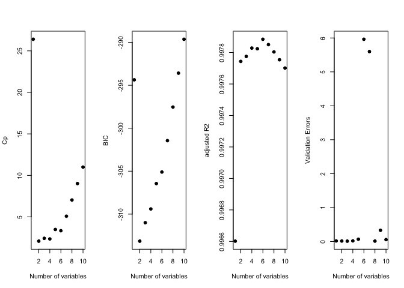
par(mfrow = c(1, 1))
# -- Now apply foward selection on the training set: --
regfit.forward <- regsubsets(Y ~ ., data = DF[train, ], nvmax = 10, method = "forward")
print(summary(regfit.forward))
## Subset selection object
## Call: regsubsets.formula(Y ~ ., data = DF[train, ], nvmax = 10, method = "forward")
## 10 Variables (and intercept)
## Forced in Forced out
## X FALSE FALSE
## X2 FALSE FALSE
## X3 FALSE FALSE
## X4 FALSE FALSE
## X5 FALSE FALSE
## X6 FALSE FALSE
## X7 FALSE FALSE
## X8 FALSE FALSE
## X9 FALSE FALSE
## X10 FALSE FALSE
## 1 subsets of each size up to 10
## Selection Algorithm: forward
## X X2 X3 X4 X5 X6 X7 X8 X9 X10
## 1 ( 1 ) " " " " "*" " " " " " " " " " " " " " "
## 2 ( 1 ) "*" " " "*" " " " " " " " " " " " " " "
## 3 ( 1 ) "*" "*" "*" " " " " " " " " " " " " " "
## 4 ( 1 ) "*" "*" "*" "*" " " " " " " " " " " " "
## 5 ( 1 ) "*" "*" "*" "*" "*" " " " " " " " " " "
## 6 ( 1 ) "*" "*" "*" "*" "*" " " " " " " "*" " "
## 7 ( 1 ) "*" "*" "*" "*" "*" " " " " "*" "*" " "
## 8 ( 1 ) "*" "*" "*" "*" "*" "*" " " "*" "*" " "
## 9 ( 1 ) "*" "*" "*" "*" "*" "*" "*" "*" "*" " "
## 10 ( 1 ) "*" "*" "*" "*" "*" "*" "*" "*" "*" "*"
reg.summary <- summary(regfit.forward)
# Test models on the validation set:
test.mat <- model.matrix(Y ~ ., data = DF[test, ])
val.errors <- rep(NA, 10)
for (ii in 1:10) {
coefi <- coef(regfit.forward, id = ii)
pred <- test.mat[, names(coefi)] %*% coefi
val.errors[ii] <- mean((DF$Y[test] - pred)^2)
}
print("forward selection validation errors")
## [1] "forward selection validation errors"
print(val.errors)
## [1] 0.015567409 0.013245221 0.009026844 0.014540813 0.055005227
## [6] 0.049894349 1.525498490 4.476027607 3.997884857 0.055217617
k <- which.min(val.errors)
print(k)
## [1] 3
print(coef(regfit.forward, id = k))
## (Intercept) X X2 X3
## 1.01506706 -0.11855671 0.02753875 0.76721123
old.par <- par(mfrow = c(1, 4))
# plot( reg.summary$rss, xlab='Number of variables', ylab='RSS' )
plot(reg.summary$cp, xlab = "Number of variables", ylab = "Cp", pch = 19)
plot(reg.summary$bic, xlab = "Number of variables", ylab = "BIC", pch = 19)
plot(reg.summary$adjr2, xlab = "Number of variables", ylab = "adjusted R2", pch = 19)
plot(val.errors, xlab = "Number of variables", ylab = "Validation Errors", pch = 19)
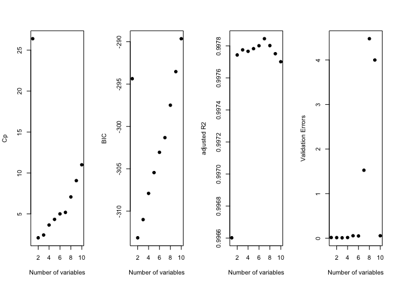
par(mfrow = c(1, 1))
# -- Now apply backwards selection to the training set: --
regfit.backward <- regsubsets(Y ~ ., data = DF[train, ], nvmax = 10, method = "backward")
print(summary(regfit.backward))
## Subset selection object
## Call: regsubsets.formula(Y ~ ., data = DF[train, ], nvmax = 10, method = "backward")
## 10 Variables (and intercept)
## Forced in Forced out
## X FALSE FALSE
## X2 FALSE FALSE
## X3 FALSE FALSE
## X4 FALSE FALSE
## X5 FALSE FALSE
## X6 FALSE FALSE
## X7 FALSE FALSE
## X8 FALSE FALSE
## X9 FALSE FALSE
## X10 FALSE FALSE
## 1 subsets of each size up to 10
## Selection Algorithm: backward
## X X2 X3 X4 X5 X6 X7 X8 X9 X10
## 1 ( 1 ) " " " " "*" " " " " " " " " " " " " " "
## 2 ( 1 ) " " " " "*" " " "*" " " " " " " " " " "
## 3 ( 1 ) "*" "*" "*" " " " " " " " " " " " " " "
## 4 ( 1 ) " " "*" "*" " " "*" " " "*" " " " " " "
## 5 ( 1 ) " " "*" "*" " " "*" "*" "*" " " " " " "
## 6 ( 1 ) " " "*" "*" " " "*" "*" "*" "*" " " " "
## 7 ( 1 ) " " "*" "*" " " "*" "*" "*" "*" " " "*"
## 8 ( 1 ) " " "*" "*" " " "*" "*" "*" "*" "*" "*"
## 9 ( 1 ) "*" "*" "*" " " "*" "*" "*" "*" "*" "*"
## 10 ( 1 ) "*" "*" "*" "*" "*" "*" "*" "*" "*" "*"
reg.summary <- summary(regfit.backward)
# Test models on the validation set:
test.mat <- model.matrix(Y ~ ., data = DF[test, ])
val.errors <- rep(NA, 10)
for (ii in 1:10) {
coefi <- coef(regfit.backward, id = ii)
pred <- test.mat[, names(coefi)] %*% coefi
val.errors[ii] <- mean((DF$Y[test] - pred)^2)
}
print("backwards selection validation errors")
## [1] "backwards selection validation errors"
print(val.errors)
## [1] 0.015567409 0.011250512 0.009026844 0.017169840 0.069259376
## [6] 0.546418670 2.799471622 0.010197576 0.328677632 0.055217617
k <- which.min(val.errors)
print(k)
## [1] 3
print(coef(regfit.backward, id = k))
## (Intercept) X X2 X3
## 1.01506706 -0.11855671 0.02753875 0.76721123
old.par <- par(mfrow = c(1, 4))
# plot( reg.summary$rss, xlab='Number of variables', ylab='RSS' )
plot(reg.summary$cp, xlab = "Number of variables", ylab = "Cp", pch = 19)
plot(reg.summary$bic, xlab = "Number of variables", ylab = "BIC", pch = 19)
plot(reg.summary$adjr2, xlab = "Number of variables", ylab = "adjusted R2", pch = 19)
plot(val.errors, xlab = "Number of variables", ylab = "Validation Errors", pch = 19)
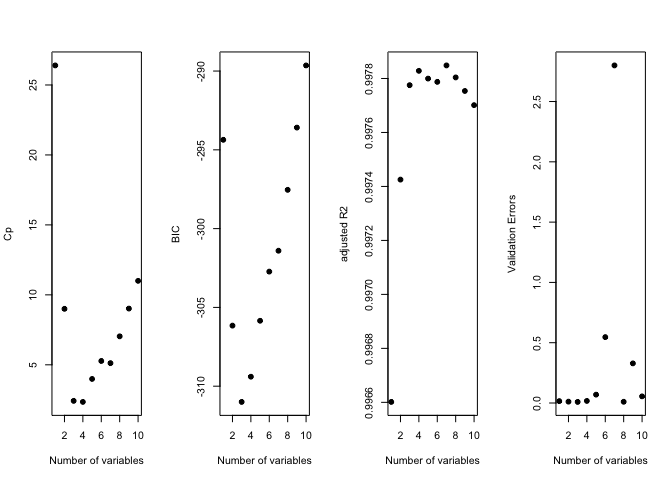
par(mfrow = c(1, 1))
# -- Now apply the lasso to our training set: --
# First fit the lasso model for all of the given lambda values :
grid <- 10^seq(10, -2, length = 100) # a grid of lambda values
Y <- DF$Y
MM <- model.matrix(Y ~ ., data = DF) # the predictors as a datamatrix
lasso.mod <- glmnet(MM, Y, alpha = 1, lambda = grid)
plot(lasso.mod) # plots the extracted coefficients as a function of lambda
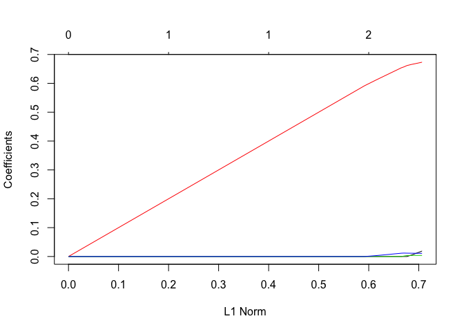
# Apply cross validation (to pick the best value of lambda):
cv.out <- cv.glmnet(MM, Y, alpha = 1)
bestlam <- cv.out$lambda.1se
print("lasso CV best value of lambda (one standard error)")
## [1] "lasso CV best value of lambda (one standard error)"
print(bestlam)
## [1] 0.03186245
plot(cv.out)
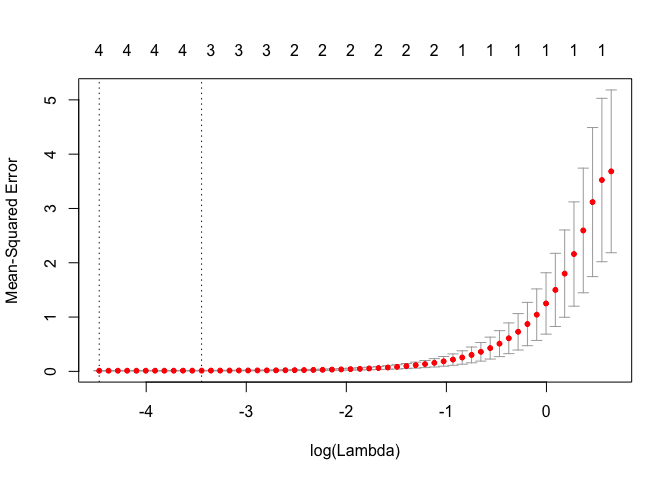
# Extract the optimal coefficients used:
lasso.coef <- predict(lasso.mod, type = "coefficients", s = bestlam)
print(lasso.coef)
## 12 x 1 sparse Matrix of class "dgCMatrix"
## 1
## (Intercept) 1.026020037
## (Intercept) .
## X .
## X2 0.004179690
## X3 0.664868098
## X4 0.003606719
## X5 0.011344145
## X6 .
## X7 .
## X8 .
## X9 .
## X10 .
# Part (f) Try a different regression function:
X <- rnorm(n)
epsilon <- 0.1 * rnorm(n)
beta_0 <- 1
beta_7 <- 2.5
Y <- beta_0 + beta_7 * X^7 + epsilon
DF <- data.frame(Y = Y, X = X, X2 = X^2, X3 = X^3, X4 = X^4, X5 = X^5, X6 = X^6, X7 = X^7, X8 = X^8, X9 = X^9, X10 = X^10)
train <- sample(c(TRUE, FALSE), n, rep = TRUE) # will roughly assign TRUE to one-half of the data (FALSE to the other half).
test <- (!train)
# Best subset selection:
regfit.full <- regsubsets(Y ~ ., data = DF[train, ], nvmax = 10)
print(summary(regfit.full))
## Subset selection object
## Call: regsubsets.formula(Y ~ ., data = DF[train, ], nvmax = 10)
## 10 Variables (and intercept)
## Forced in Forced out
## X FALSE FALSE
## X2 FALSE FALSE
## X3 FALSE FALSE
## X4 FALSE FALSE
## X5 FALSE FALSE
## X6 FALSE FALSE
## X7 FALSE FALSE
## X8 FALSE FALSE
## X9 FALSE FALSE
## X10 FALSE FALSE
## 1 subsets of each size up to 10
## Selection Algorithm: exhaustive
## X X2 X3 X4 X5 X6 X7 X8 X9 X10
## 1 ( 1 ) " " " " " " " " " " " " "*" " " " " " "
## 2 ( 1 ) "*" " " " " " " " " " " "*" " " " " " "
## 3 ( 1 ) "*" " " " " " " "*" " " "*" " " " " " "
## 4 ( 1 ) " " " " "*" " " "*" " " "*" " " "*" " "
## 5 ( 1 ) " " " " "*" "*" "*" " " "*" " " "*" " "
## 6 ( 1 ) " " " " " " " " "*" "*" "*" "*" "*" "*"
## 7 ( 1 ) " " "*" " " "*" "*" "*" "*" " " "*" "*"
## 8 ( 1 ) "*" "*" " " "*" "*" "*" "*" " " "*" "*"
## 9 ( 1 ) "*" "*" "*" "*" "*" "*" "*" " " "*" "*"
## 10 ( 1 ) "*" "*" "*" "*" "*" "*" "*" "*" "*" "*"
# Test best subset models on the validation set:
test.mat <- model.matrix(Y ~ ., data = DF[test, ])
val.errors <- rep(NA, 10)
for (ii in 1:10) {
coefi <- coef(regfit.full, id = ii)
pred <- test.mat[, names(coefi)] %*% coefi
val.errors[ii] <- mean((DF$Y[test] - pred)^2)
}
print("best subsets validation errors")
## [1] "best subsets validation errors"
print(val.errors)
## [1] 0.01151953 0.01334971 0.01514501 0.06420174 0.09905791 1.86716273
## [7] 0.62617621 0.58059869 0.53819549 1.05507636
k <- which.min(val.errors)
print(k)
## [1] 1
print("best subsets optimal coefficients")
## [1] "best subsets optimal coefficients"
print(coef(regfit.full, id = k)) # print the coefficients of the best model
## (Intercept) X7
## 0.9840339 2.5000261
print(val.errors[k])
## [1] 0.01151953
# Using the lasso technique:
# First apply cross validation (to find the optimal value of lambda):
MM <- model.matrix(Y ~ ., data = DF)
cv.out <- cv.glmnet(MM, Y, alpha = 1)
plot(cv.out)
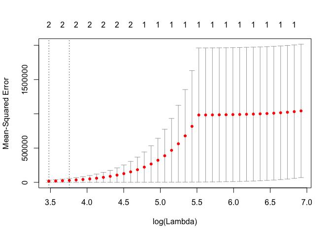
bestlam <- cv.out$lambda.1se
print("best lambda (1 se)")
## [1] "best lambda (1 se)"
print(bestlam)
## [1] 42.84324
# Now fit the lasso with this value of lambda:
lasso.mod <- glmnet(MM, Y, alpha = 1)
lasso.coef <- predict(lasso.mod, type = "coefficients", s = bestlam)
print("lasso optimal coefficients")
## [1] "lasso optimal coefficients"
print(lasso.coef)
## 12 x 1 sparse Matrix of class "dgCMatrix"
## 1
## (Intercept) 5.3888292
## (Intercept) .
## X .
## X2 .
## X3 .
## X4 .
## X5 .
## X6 0.2125842
## X7 2.3286883
## X8 .
## X9 .
## X10 .
print("I do not think the predict method is working correctly...")
## [1] "I do not think the predict method is working correctly..."
lasso.predict <- predict(lasso.mod, s = bestlam, newx = MM)
print("lasso RSS error")
## [1] "lasso RSS error"
print(mean((Y - lasso.predict)^2))
## [1] 1839.887
library(pls)
##
## Attaching package: 'pls'
##
## The following object is masked from 'package:stats':
##
## loadings
set.seed(0)
n <- dim(College)[1]
p <- dim(College)[2]
train <- sample(c(TRUE, FALSE), n, rep = TRUE) # will roughly assign TRUE to one-half of the data (FALSE to the other half).
test <- (!train)
College_train <- College[train, ]
College_test <- College[test, ]
# Part (b):
m <- lm(Apps ~ ., data = College_train)
Y_hat <- predict(m, newdata = College_test)
MSE <- mean((College_test$Apps - Y_hat)^2)
print(sprintf("Linear model test MSE= %10.3f", MSE))
## [1] "Linear model test MSE= 1615966.966"
# Part (c):
Y <- College_train$Apps
MM <- model.matrix(Apps ~ ., data = College_train)
cv.out <- cv.glmnet(MM, Y, alpha = 0)
plot(cv.out)
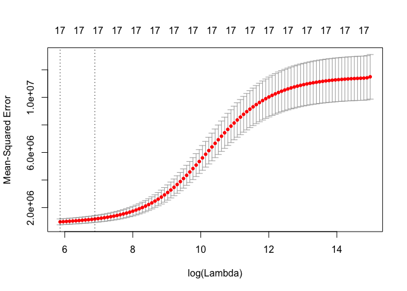
bestlam <- cv.out$lambda.1se
# print( 'ridge regression CV best value of lambda (one standard error)' ) print( bestlam )
ridge.mod <- glmnet(MM, Y, alpha = 0)
Y_hat <- predict(ridge.mod, s = bestlam, newx = model.matrix(Apps ~ ., data = College_test))
MSE <- mean((College_test$Apps - Y_hat)^2)
print(sprintf("Ridge regression test MSE= %10.3f", MSE))
## [1] "Ridge regression test MSE= 3318015.663"
# Part (d):
cv.out <- cv.glmnet(MM, Y, alpha = 1)
plot(cv.out)
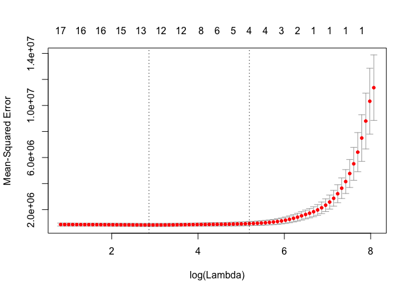
bestlam <- cv.out$lambda.1se
# print( 'lasso CV best value of lambda (one standard error)' ) print( bestlam )
lasso.mod <- glmnet(MM, Y, alpha = 1)
Y_hat <- predict(lasso.mod, s = bestlam, newx = model.matrix(Apps ~ ., data = College_test))
MSE <- mean((College_test$Apps - Y_hat)^2)
print(sprintf("Lasso regression test MSE= %10.3f", MSE))
## [1] "Lasso regression test MSE= 2018489.732"
print("lasso coefficients")
## [1] "lasso coefficients"
print(predict(lasso.mod, type = "coefficients", s = bestlam))
## 19 x 1 sparse Matrix of class "dgCMatrix"
## 1
## (Intercept) -515.67319420
## (Intercept) .
## PrivateYes .
## Accept 1.26431392
## Enroll .
## Top10perc 14.89903622
## Top25perc .
## F.Undergrad 0.01925533
## P.Undergrad .
## Outstate .
## Room.Board .
## Books .
## Personal .
## PhD .
## Terminal .
## S.F.Ratio .
## perc.alumni .
## Expend 0.04586867
## Grad.Rate .
# Part (e):
pcr.mod <- pcr(Apps ~ ., data = College_train, scale = TRUE, validation = "CV")
# Use this to select the number of components to include ... looks like CV suggests we should use ALL predictors
validationplot(pcr.mod, val.type = "MSEP")
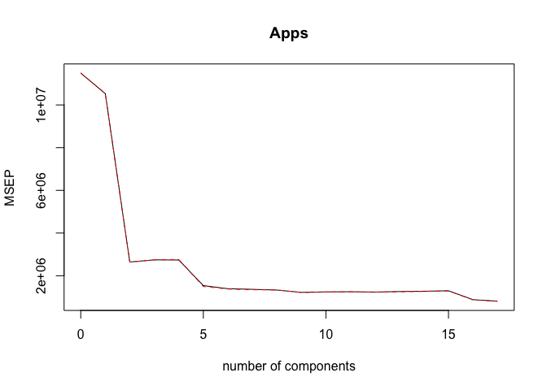
ncomp <- 17
Y_hat <- predict(pcr.mod, College_test, ncomp = ncomp)
MSE <- mean((College_test$Apps - Y_hat)^2)
print(sprintf("PCR (with ncomp= %5d) test MSE= %10.3f", ncomp, MSE))
## [1] "PCR (with ncomp= 17) test MSE= 1615966.966"
# Part (f):
pls.mod <- plsr(Apps ~ ., data = College_train, scale = TRUE, validation = "CV")
# Use this to select the number of components to include ... looks like CV suggests the best is to use ALL predictors but there is
# not much change in moving from ~ 5 predictors to 17 so we will take 10 (somewhere in the middle)
validationplot(pls.mod, val.type = "MSEP")
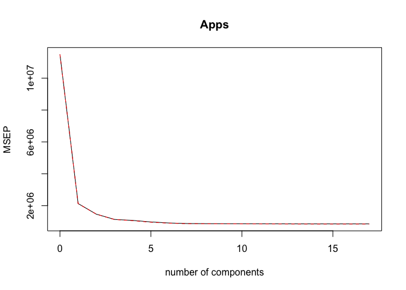
ncomp <- 10
Y_hat <- predict(pls.mod, College_test, ncomp = ncomp)
MSE <- mean((College_test$Apps - Y_hat)^2)
print(sprintf("PLS (with ncomp= %5d) test MSE= %10.3f", ncomp, MSE))
## [1] "PLS (with ncomp= 10) test MSE= 1601425.747"
set.seed(0)
# The sample size and the number of features:
n <- 1000
p <- 20
# Create the true value of beta (and zero out half of the entries):
beta_truth <- rnorm(p + 1) # add one for the constant beta_0
zero_locations <- c(2, 3, 4, 7, 8, 11, 12, 15, 17, 20)
beta_truth[zero_locations] <- 0
# For debugging lets check that we can recover our coefficients: beta_truth = rep(0,p+1); beta_truth[1] = 1.5; beta_truth[10] = 3.5;
# beta_truth[15] = -3.4
print("True values for beta (beta_0-beta_20):")
## [1] "True values for beta (beta_0-beta_20):"
print(beta_truth)
## [1] 1.262954285 0.000000000 0.000000000 0.000000000 0.414641434
## [6] -1.539950042 0.000000000 0.000000000 -0.005767173 2.404653389
## [11] 0.000000000 0.000000000 -1.147657009 -0.289461574 0.000000000
## [16] -0.411510833 0.000000000 -0.891921127 0.435683299 0.000000000
## [21] -0.224267885
# Generate some input features and an output response:
X <- c(rep(1, n), rnorm(n * p)) # make leading column of ones
X <- matrix(X, nrow = n, ncol = (p + 1), byrow = FALSE)
Y <- X %*% beta_truth + rnorm(n)
# Create a dataframe with this data:
DF <- data.frame(Y, X[, -1]) # drop the column of ones
train_inds <- sample(1:n, 100)
test_inds <- (1:n)[-train_inds]
# -- Apply best subset selection using the training data: --
regfit.full <- regsubsets(Y ~ ., data = DF[train_inds, ], nvmax = 20)
# print( summary( regfit.full ) )
reg.summary <- summary(regfit.full)
# Plot the in-sample MSE:
training.mat <- model.matrix(Y ~ ., data = DF[train_inds, ])
training.errors <- rep(NA, 20)
for (ii in 1:20) {
coefi <- coef(regfit.full, id = ii)
pred <- training.mat[, names(coefi)] %*% coefi
training.errors[ii] <- mean((DF$Y[train_inds] - pred)^2)
}
print("best subset training MSE")
## [1] "best subset training MSE"
print(training.errors)
## [1] 5.9770059 3.7871159 2.4678405 1.7251665 1.2576488 1.1772519 1.0768021
## [8] 1.0087222 0.9721521 0.9530143 0.9304660 0.9254522 0.9206935 0.9152359
## [15] 0.9133050 0.9125718 0.9117938 0.9112271 0.9108313 0.9106024
plot(1:20, training.errors, xlab = "number of predictors", ylab = "training MSE", type = "o", col = "red", ylim = c(0, 9))
# Test models on the validation set:
test.mat <- model.matrix(Y ~ ., data = DF[test_inds, ])
val.errors <- rep(NA, 20)
for (ii in 1:20) {
coefi <- coef(regfit.full, id = ii)
pred <- test.mat[, names(coefi)] %*% coefi
val.errors[ii] <- mean((DF$Y[test_inds] - pred)^2)
}
print("best subset validation MSE")
## [1] "best subset validation MSE"
print(val.errors)
## [1] 6.531306 3.895918 2.584956 1.787702 1.642511 1.458888 1.232284
## [8] 1.111670 1.180321 1.214303 1.251878 1.267629 1.274193 1.293091
## [15] 1.290385 1.292731 1.290206 1.294843 1.295492 1.297954
k <- which.min(val.errors)
print(k)
## [1] 8
print(coef(regfit.full, id = k))
## (Intercept) X4 X5 X9 X12 X13
## 1.3210455 0.4132288 -1.5880109 2.4639393 -1.1455077 -0.2815162
## X15 X17 X18
## -0.3589236 -1.0286318 0.6142240
points(1:20, val.errors, xlab = "number of predictors", ylab = "testing MSE", type = "o", col = "green")
grid()
legend(11, 9.25, c("Training MSE", "Testing MSE"), col = c("red", "green"), lty = c(1, 1))
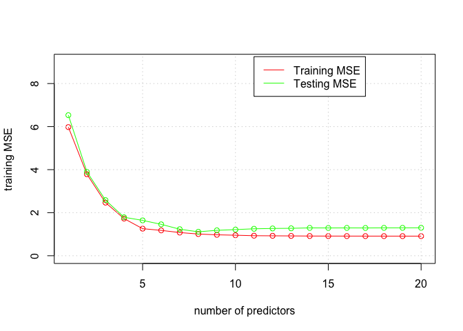
# Part (g):
nms <- colnames(DF)
nms[1] <- "(Intercept)"
names(beta_truth) <- nms
norm.beta.diff <- rep(NA, 20)
for (ii in 1:20) {
coefi <- coef(regfit.full, id = ii)
norm.beta.diff[ii] <- sqrt(sum((beta_truth[names(coefi)] - coefi)^2))
}
plot(1:20, norm.beta.diff, xlab = "number of predictors", ylab = "||beta_truth - beta^r||", type = "o", col = "green")
grid()
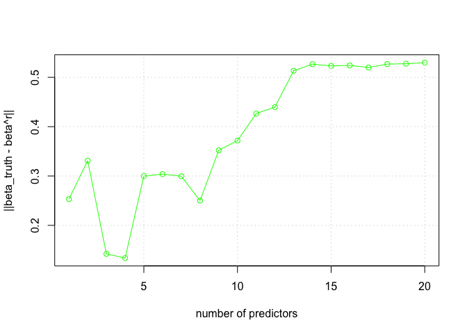
library(MASS)
set.seed(0)
n <- dim(Boston)[1]
p <- dim(Boston)[2]
train <- sample(c(TRUE, FALSE), n, rep = TRUE) # will roughly assign TRUE to one-half of the data (FALSE to the other half).
test <- (!train)
Boston_train <- Boston[train, ]
Boston_test <- Boston[test, ]
# The full linear model:
m <- lm(crim ~ ., data = Boston_train)
Y_hat <- predict(m, newdata = Boston_test)
MSE <- mean((Boston_test$crim - Y_hat)^2)
print(sprintf("Linear model test MSE= %10.3f", MSE))
## [1] "Linear model test MSE= 34.996"
# Ridge regression:
Y <- Boston_train$crim
MM <- model.matrix(crim ~ ., data = Boston_train)
cv.out <- cv.glmnet(MM, Y, alpha = 0)
plot(cv.out)
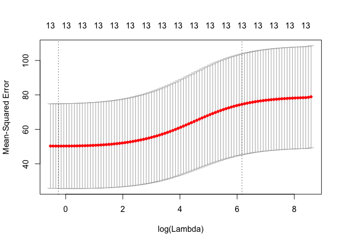
bestlam <- cv.out$lambda.1se
# print( 'ridge regression CV best value of lambda (one standard error)' ) print( bestlam )
ridge.mod <- glmnet(MM, Y, alpha = 0)
Y_hat <- predict(ridge.mod, s = bestlam, newx = model.matrix(crim ~ ., data = Boston_test))
MSE <- mean((Boston_test$crim - Y_hat)^2)
print(sprintf("Ridge regression test MSE= %10.3f", MSE))
## [1] "Ridge regression test MSE= 63.826"
# The Lasso:
cv.out <- cv.glmnet(MM, Y, alpha = 1)
plot(cv.out)
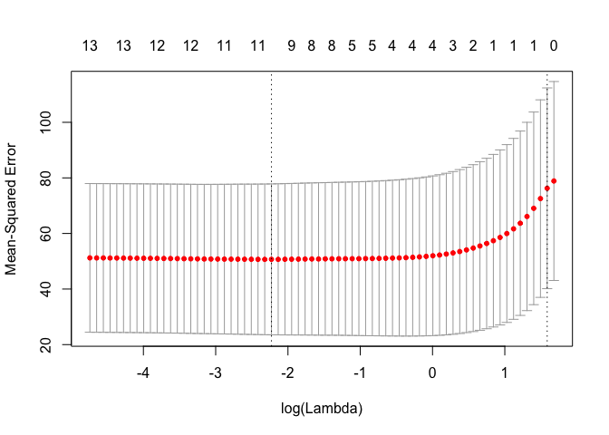
bestlam <- cv.out$lambda.1se
# print( 'lasso CV best value of lambda (one standard error)' ) print( bestlam )
lasso.mod <- glmnet(MM, Y, alpha = 1)
Y_hat <- predict(lasso.mod, s = bestlam, newx = model.matrix(crim ~ ., data = Boston_test))
MSE <- mean((Boston_test$crim - Y_hat)^2)
print(sprintf("Lasso regression test MSE= %10.3f", MSE))
## [1] "Lasso regression test MSE= 63.572"
print("lasso coefficients")
## [1] "lasso coefficients"
print(predict(lasso.mod, type = "coefficients", s = bestlam))
## 15 x 1 sparse Matrix of class "dgCMatrix"
## 1
## (Intercept) 3.07011734
## (Intercept) .
## zn .
## indus .
## chas .
## nox .
## rm .
## age .
## dis .
## rad 0.05507813
## tax .
## ptratio .
## black .
## lstat .
## medv .
# Principle Component Regression:
pcr.mod <- pcr(crim ~ ., data = Boston_train, scale = TRUE, validation = "CV")
# Use this to select the number of components to include ... looks like CV suggests we should use 3 predictors
validationplot(pcr.mod, val.type = "MSEP")
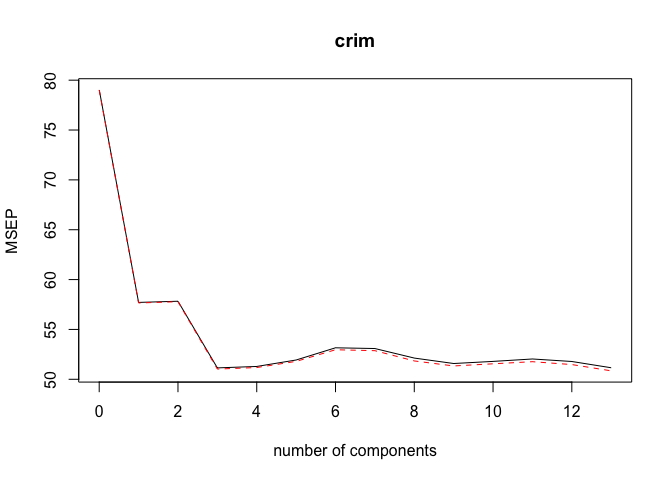
ncomp <- 3
Y_hat <- predict(pcr.mod, Boston_test, ncomp = ncomp)
MSE <- mean((Boston_test$crim - Y_hat)^2)
print(sprintf("PCR (with ncomp= %5d) test MSE= %10.3f", ncomp, MSE))
## [1] "PCR (with ncomp= 3) test MSE= 40.049"
# Paritial Least Squares:
pls.mod <- plsr(crim ~ ., data = Boston_train, scale = TRUE, validation = "CV")
# Use this to select the number of components to include ... looks like CV suggests the best is to use 5 predictors
validationplot(pls.mod, val.type = "MSEP")
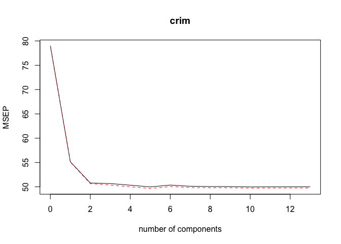
ncomp <- 5
Y_hat <- predict(pls.mod, Boston_test, ncomp = ncomp)
MSE <- mean((Boston_test$crim - Y_hat)^2)
print(sprintf("PLS (with ncomp= %5d) test MSE= %10.3f", ncomp, MSE))
## [1] "PLS (with ncomp= 5) test MSE= 35.258"